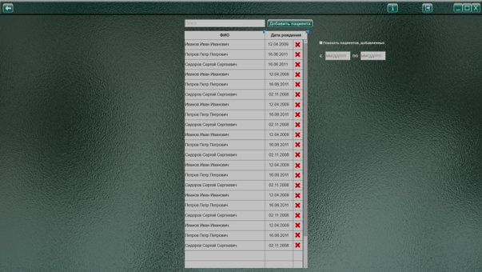
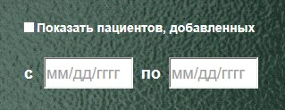
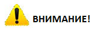

Список пациентов выводится в виде таблицы, с колонками ФИО и Дата рождения.
Просмотр полного списка (если он выходит за пределы экрана) возможен при помощи колесика мыши (курсор должен находится над списком), перетаскиванием скроллбара (вертикальный ползунок в правой части списка) с зажатой левой кнопкой мыши или стрелками ↑ и ↓ на клавиатуре.
Выбор пациента осуществляется кликом левой кнопкой мыши по нужной строке. При выборе пациента Вы переходите в его личные данные, на страницу «Анамнез», с которой доступен переход на страницу с протоколами выполненных упражнений, а также возможность выбрать упражнения (методики) для диагностики.
Сортировка списка по алфавиту осуществляется кликом левой кнопкой мыши на поле с надписью «Ф.И.О.» в шапке таблицы.
Сортировка списка по дате рождения осуществляется кликом левой кнопкой мыши на поле с надписью «Дата рождения» в шапке таблицы
Поле «Поиск»
Для быстрого поиска пациентов воспользуйтесь полем «Поиск». Поставьте в него курсор (наведите мышку и кликните левой кнопкой) и начните печатать. Список пациентов отфильтровывается по мере ввода букв. Поиск ведется по фамилии, имени и отчеству. При нажатии на крестик «х» поле очищается.
Пункт «Показать пациентов, добавленных с «даты» по «дату»

При установке галочки в данном пункте, в списке отображаются пациенты, добавленные в выбранный период.
Удаление пациента из списка и базы данных.
Для удаления пациента из списка и базы данных, воспользуйтесь кнопкой  удалить. Появится окно предупреждения
удалить. Появится окно предупреждения

При нажатии кнопки «Продолжить» все данные пациента будут удалены.

ВНИМАНИЕ!
Это действие необратимо! Будьте внимательны!
При нажатии кнопки «Отменить» данные не изменяются
Пока открыто окно предупреждения, остальные элементы недоступны, пока пользователь не закроет данное окно, сделав выбор «продолжить» или «отменить».
Кнопка «Добавить пациента»
Открывает новый Анамнез с чистыми полями. После заполнения полей «ФИО» и «Дата рождения», строка с новым пациентом автоматически добавляется в таблицу «Список пациентов»
Вход на страницы анамнеза, протоколов и выбора упражнений возможен только через выбор пациента из списка, т.к. данные пациента программа использует при автоматическом формировании протоколов фиксации результатов исследования. Для ознакомления специалиста с возможностью программы, можно создать вымышленного пациента и выбрать его в списке. Перейдя в личный кабинет, ознакомьтесь с упражнениями, протоколами и анамнезом. В последствии созданного для изучения программы «пациента» можно удалить из базы данных. Также полное описание вы можете изучить в руководстве пользователя.